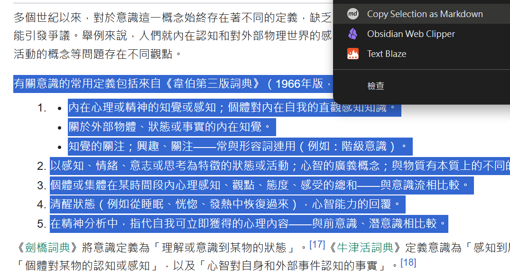
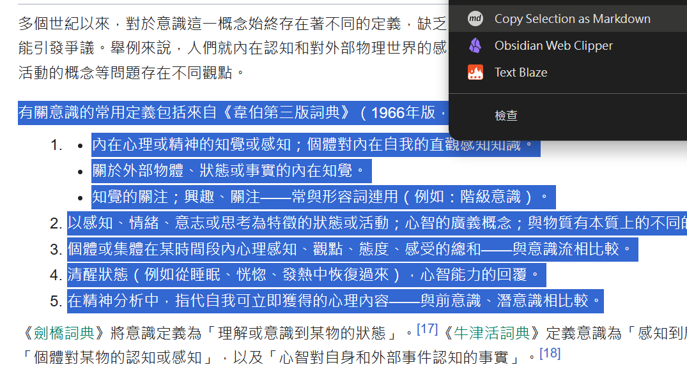

Markdown to XMind
簡介
將多組 ai對話或是網頁內容，保留階層結構，貼入 XMind，進行整理、頭腦風暴或團隊協作。
使用場景--1 ：任意的ai對話窗口
-
一、copy md 資料，通常在ai對話窗口的上方或下方，如下圖：

-
二、只需一鍵操作，即可轉換：
-
三、在xmind中，直接貼入 (ctrl+v)：

- 四、以 XMind 的視覺化呈現，進行整理，頭腦風暴或團隊協作。
系統需求
- Windows 作業系統
- 已安裝 XMind 程式
安裝：綠色免安裝
更多使用場景
使用景場--2 ： notebookLm 或是 任意網頁
 
